| 日付 | 2026年8月12日（水） - 2026年8月14日（金） | ||||||
|---|---|---|---|---|---|---|---|
| 山域 | 北アルプス | ||||||
| メンバー | 家族（妻） | ||||||
| 山行形態 | 2泊3日山小屋泊 | ||||||
| アクセス | 車 | ||||||
| ルート (Map) |
|
3日目
本日も4時前に出発。そこまで急ぐ理由はないのだが、山頂で朝日が見たいので。
日本海に面する町の明かりが見えている。海に浮かぶ船の光もポツポツ。
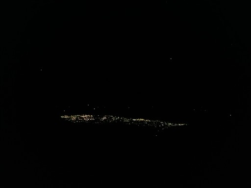
暗闇の中を朝日岳の山頂向かって登っていく。だいぶ明るくなってきた。
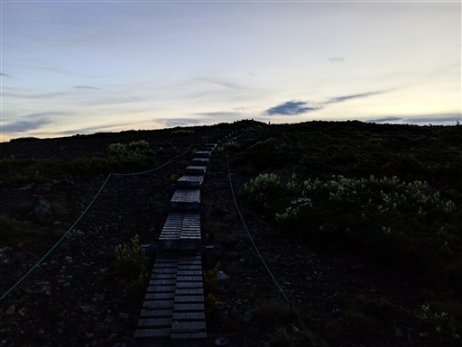
朝日岳山頂到着。標高2418m。
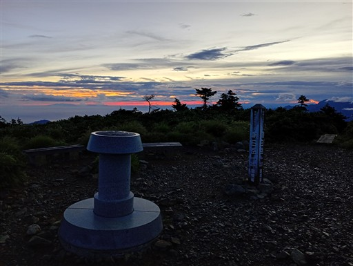
丸い山なので、ダイナミックな景色は見られないが、360度の展望が楽しめる。
こちらは白馬岳と旭岳。
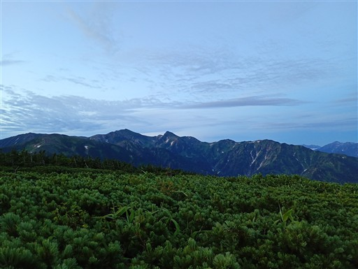
立山～剱岳と毛勝三山。
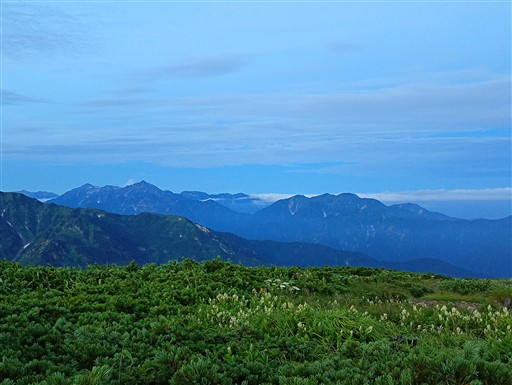
小屋で買った寿司を食べて朝日を待つ。
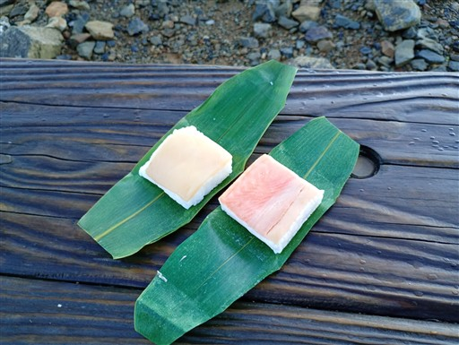
しかし、雲が多く残念ながら朝日は現れず。
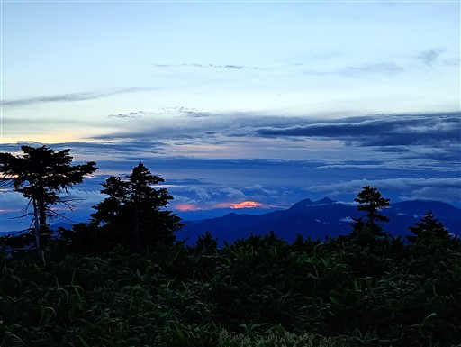
その代わり滝雲が現れる。小蓮華山の尾根が滝雲に飲み込まれている。
あれだと、あそこを歩いている人はホワイトアウトだろう。
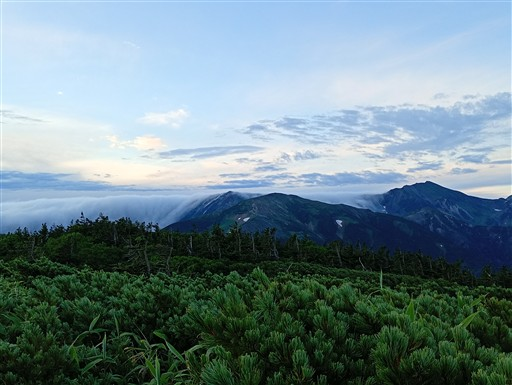
目の前に広がる広大な日本海。奥に見えているのは恐らく佐渡ヶ島。
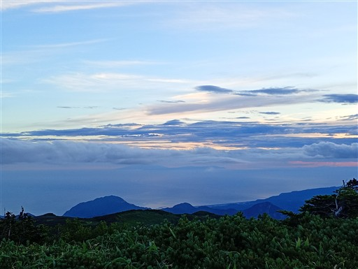
真中左が虹色に輝いている。恐らく幻日だ。
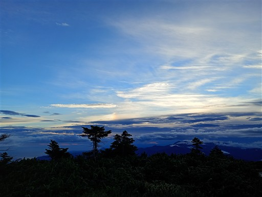
展望を満喫したら出発。しばらくは絶景ロードが続く。
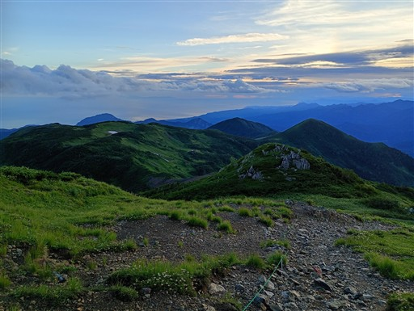
雪渓の近くに大群落を作っているのは恐らくハクサンコザクラ。
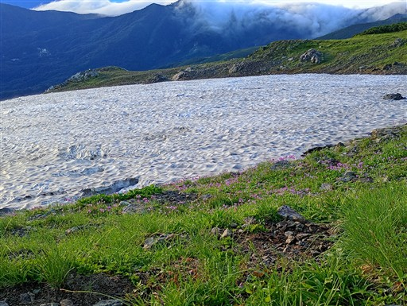
イワカガミとチングルマ。
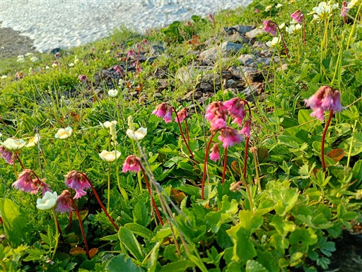
イワイチョウ。
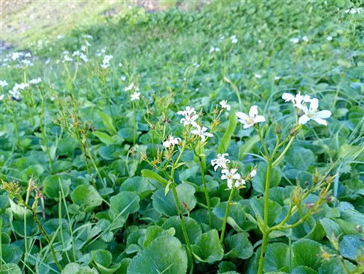
ミヤマダイコンソウ。これまでの道のりでは花は終わっていたが、ここではきれいに咲いている。
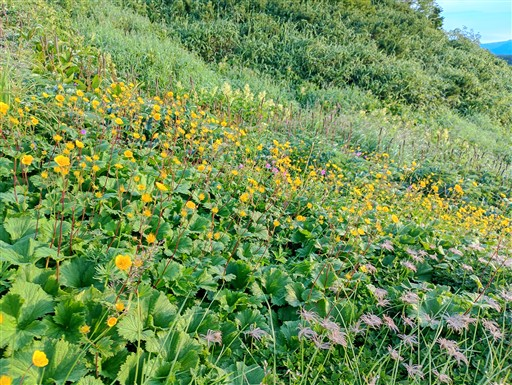
ハクサンフウロとモミジカラマツ。
この辺りも本当に見事なお花畑だ。
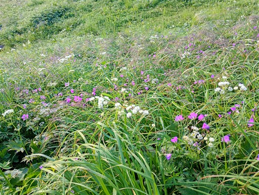
太陽が上がると、滝雲はきれいに消え失せている。
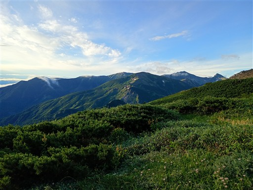
素晴らしい雰囲気の場所だ。目の前の尾根は複雑な形をしている。
あちらは栂海新道で、残念ながら我々は手前で右に逸れていく。
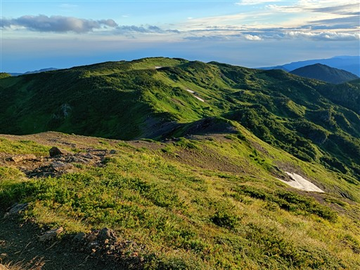
黒部川が海に注いでいる。奥にぼんやり見えているのは能登半島だ。
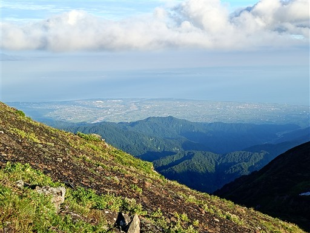
栂海新道との分岐に到着。
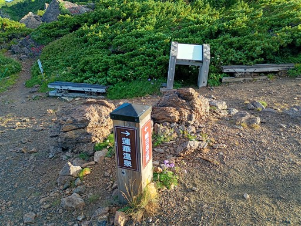
栂海新道への道。いつか辿ってみたい。
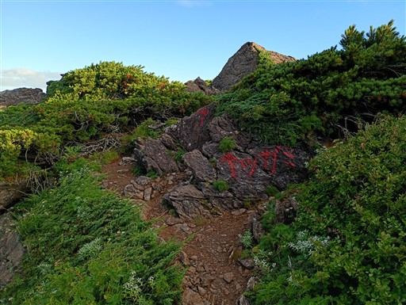
我々は蓮華温泉への道を下っていく。
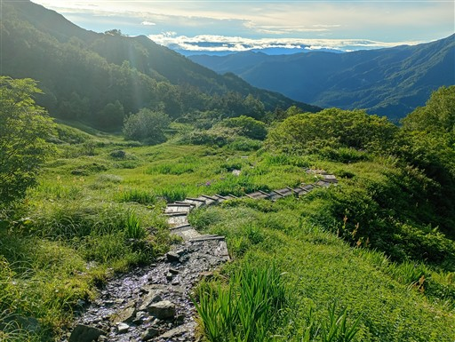
ヒオウギアヤメが数多く咲いている。
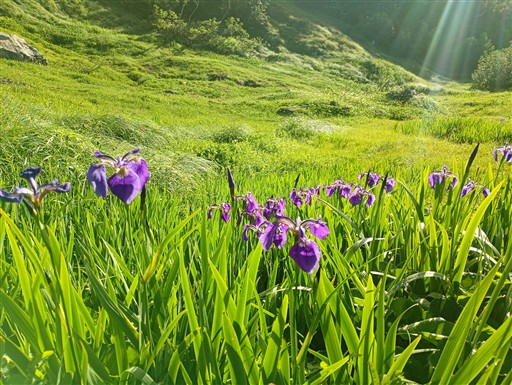
マルバダケブキ。地味なこの花も光を浴びると美しい。
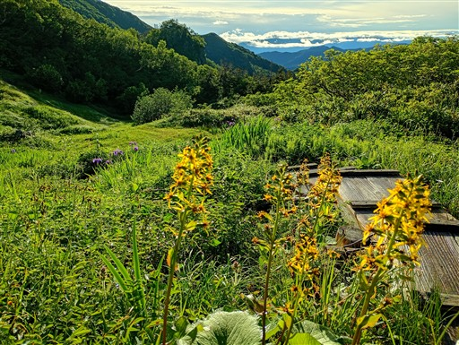
少しだけ沢の中を歩く。
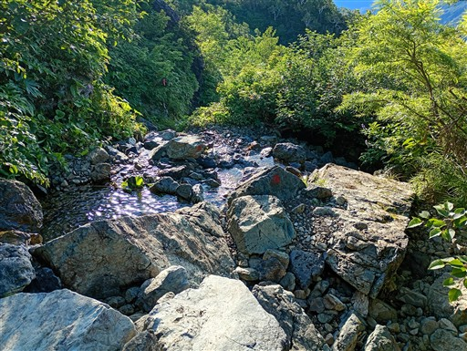
オニシオガマ。
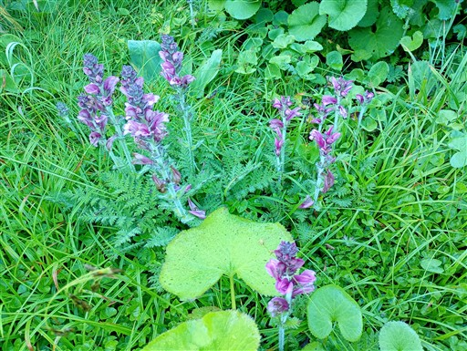
右手に雪倉岳がずっと見えている。山腹はデコボコだ。なぜあんな形になるのだろう？
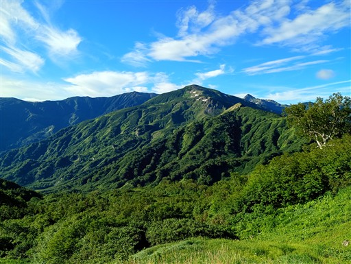
登山道に張り出した迫力ある大木。
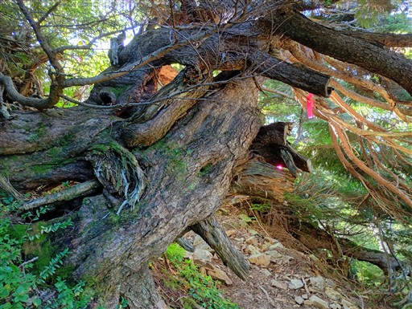
眼下に五輪高原が見えてきた。非常に変化のある登山道だ。
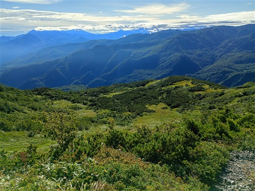
シロバナツリガネニンジン。珍しい白色のツリガネニンジンだ。
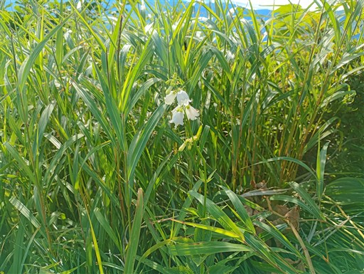
ワレモコウ。
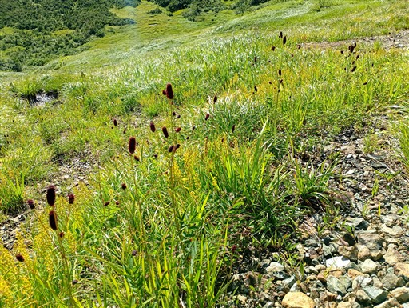
完全に崩壊した木製テーブル。
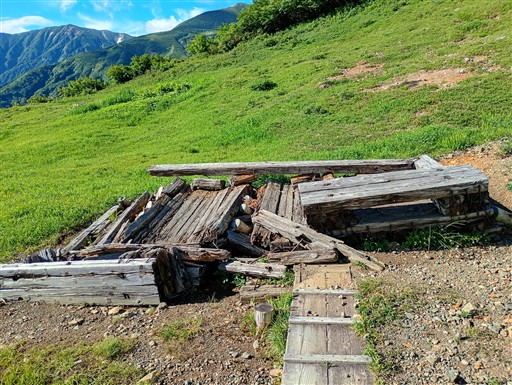
五輪高原。美しい湿原が広がっている。
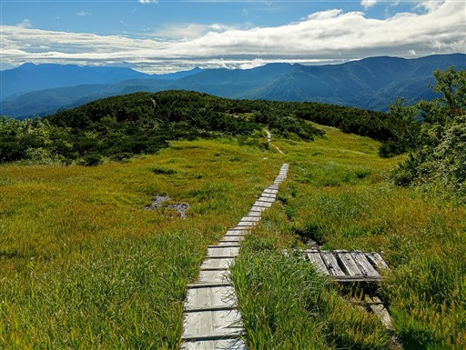
一面に広がるキンコウカ。
残念ながら花はほとんど終わっているが、それでも素晴らしい景色だ。
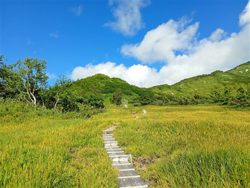
花園三角点。なぜか湿原の先の樹林帯の中にある。
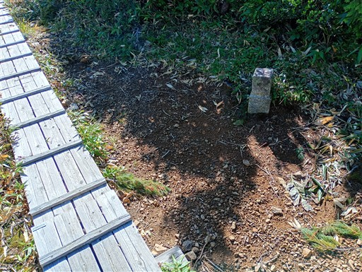
フライングして紅葉している。よく見ると、特定の株ではなく特定の枝だ。
同じ木でも紅葉している枝としていない枝がある。
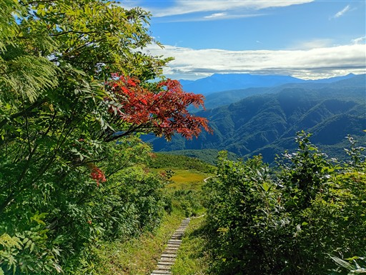
目の前の尾根の中腹の白い点、目的地の蓮華温泉が見える。
ここから谷を下り、その後あそこまで登り上げる必要がある。
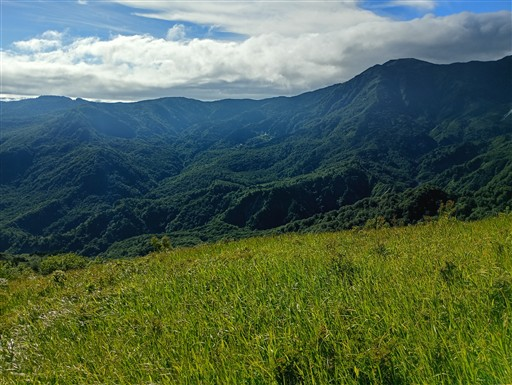
樹林帯の中に入る。淡々と下っていく。
等高線は細かいが、登山道の傾斜はそれほどでもない。
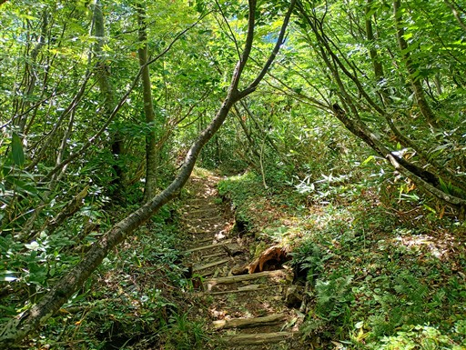
小蓮華山方面の尾根は再び雲に覆われている。
あの雲は本日は取れそうにない。
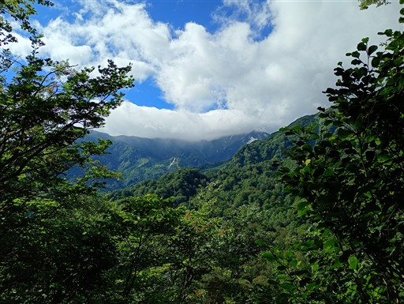
白高知沢を渡る橋。ずいぶん立派な橋だ。
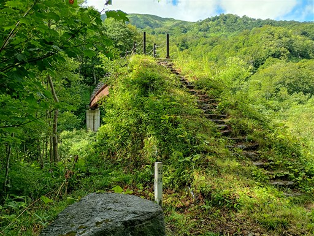
橋から見る景色。朝日岳が見えている。
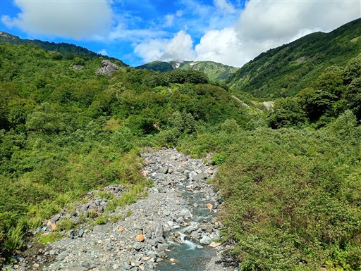
アサギマダラがヒラヒラと飛んでいる。
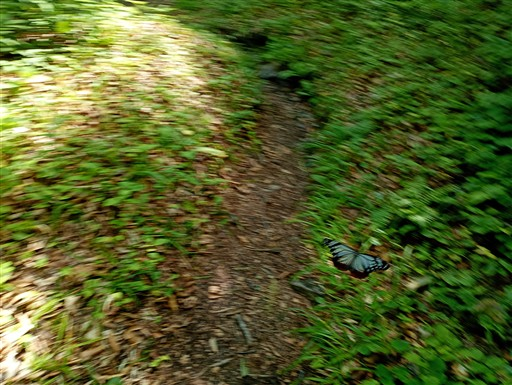
続いて瀬戸川を渡る。ここが最も低い場所。
ここから蓮華温泉まで300m以上登る。実は本日一番の登りだ。
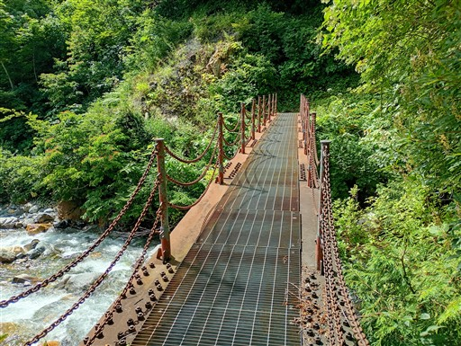
樹林帯の中を登っていくと、兵馬ノ平という場所に着く。
ここも湿地帯なのだが、草ボウボウだ。
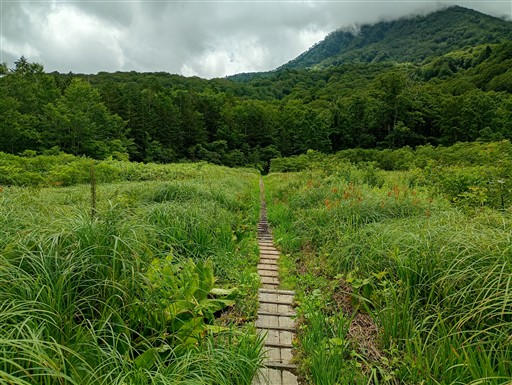
最後の登り。道はよく整備されている。
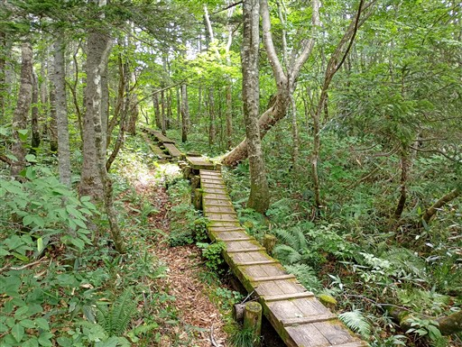
登山道の横に突然草原が現れる。
何かと思ったらキャンプ場のようで、ちゃんと営業しているようだ。
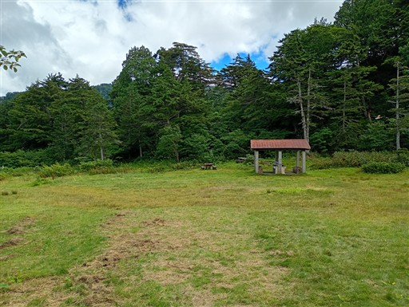
林道に到着。あとは林道を歩くのみ。
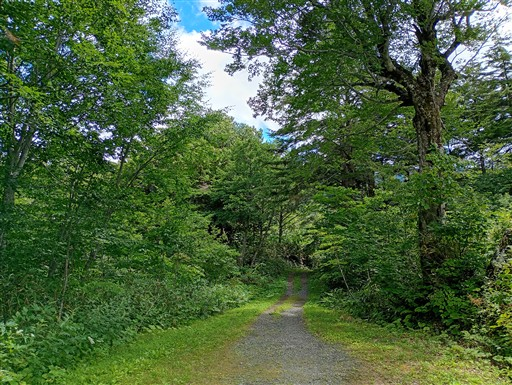
蓮華温泉が近づいてきた。
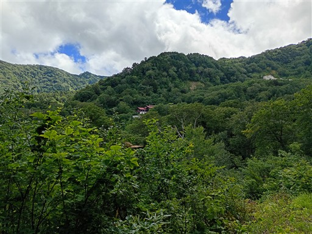
無事駐車場に到着する。車に置いておいた着替えを持って蓮華温泉に向かう。
今回の山行は非常に天気に恵まれた。山頂からも、稜線からも素晴らしい展望が得られた。
そして時期が過ぎたと思って期待していなかった花畑も素晴らしかった。
まだ少し残雪があり、初夏の瑞々しい花々をたくさん眺められた。
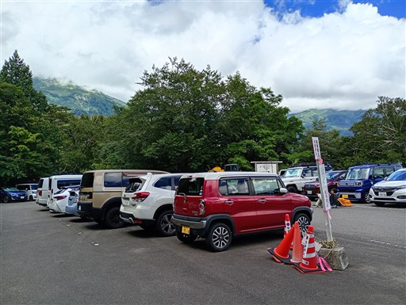